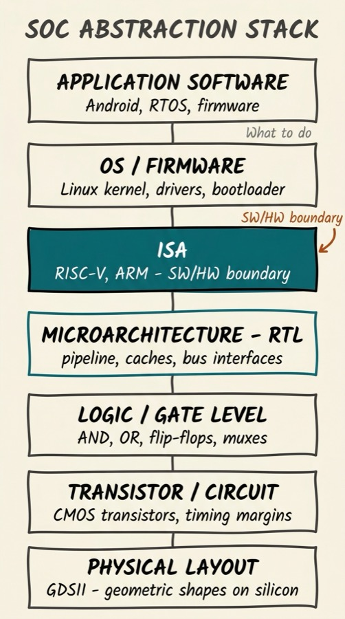
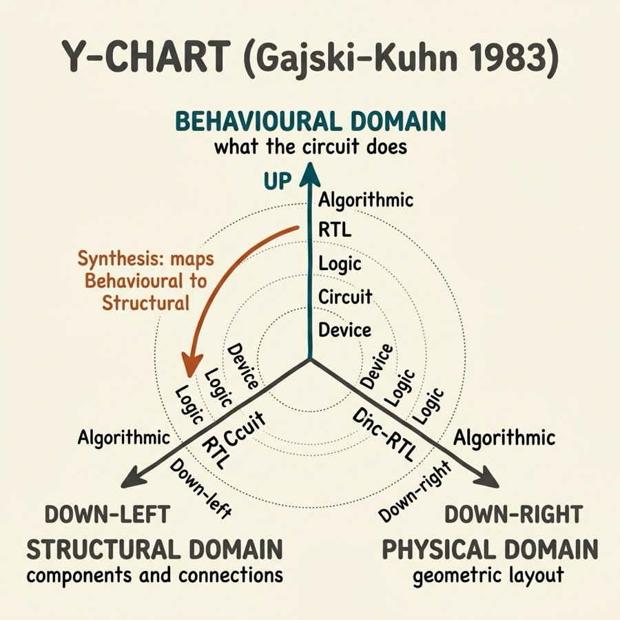
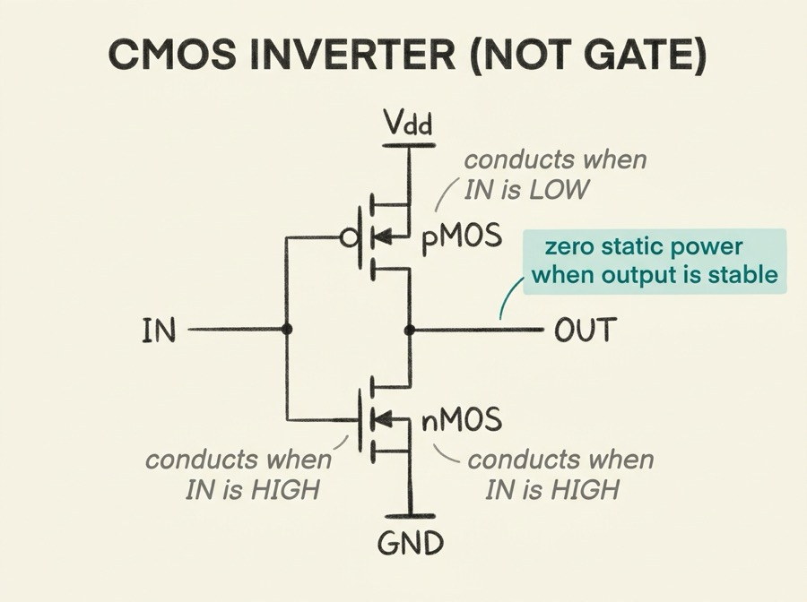
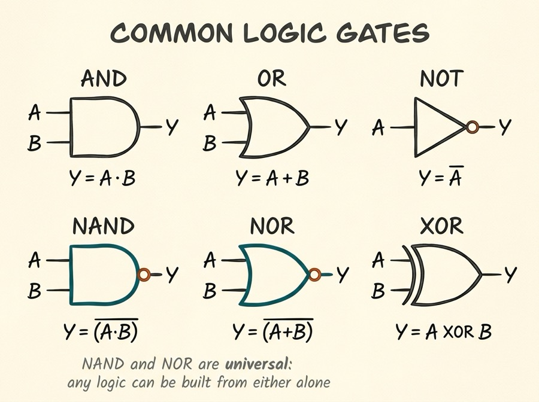
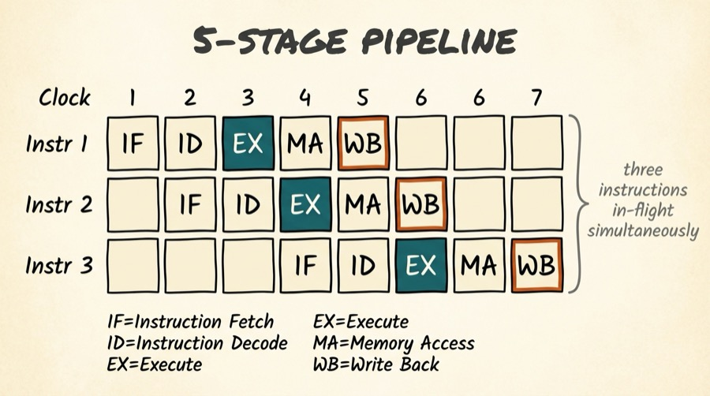
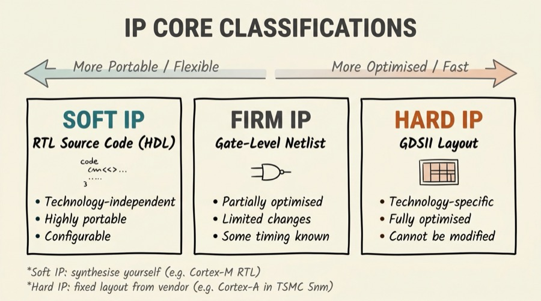
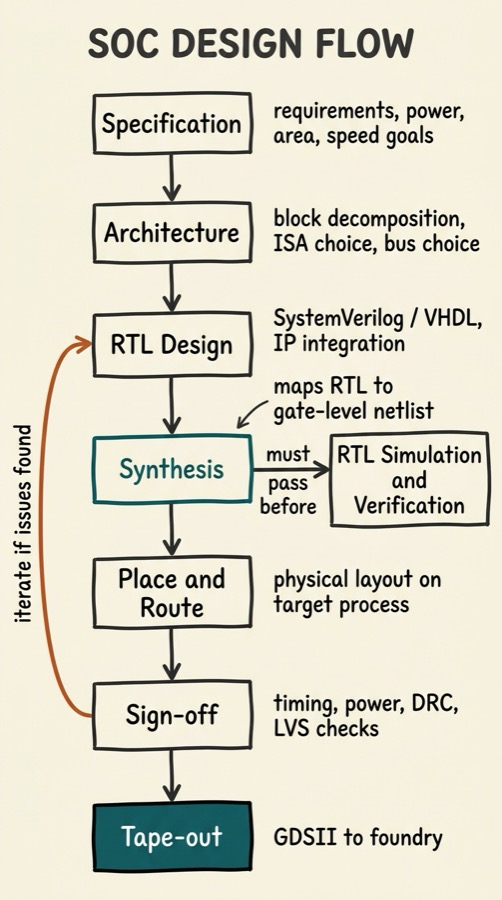

Series: Introduction to SoC Design | Article 3 of 11
Introduction
In the previous article we looked at what a SoC is. Now we need to understand how it is described, designed, and built. The answer is not a single language or a single tool - it is a stack of abstraction layers, each hiding complexity from the layer above it.
This concept of layered abstraction is one of the most powerful ideas in all of engineering, and it is particularly rich in SoC design, where the stack spans from quantum mechanics at the silicon level all the way up to the C programs and operating systems that run on the finished chip.
The Abstraction Hierarchy
Think of SoC design as a series of nested boxes. Each layer can be understood and reasoned about independently, so long as it respects the contracts defined by the layers around it.
┌──────────────────────────────────────────────────────────┐
│ Application Software │ <- "What to do"
│ (Android, RTOS, bare-metal firmware) │
├──────────────────────────────────────────────────────────┤
│ Operating System / Firmware │
│ (Linux kernel, device drivers, bootloader) │
├──────────────────────────────────────────────────────────┤
│ Instruction Set Architecture (ISA) │ <- SW/HW boundary
│ (RISC-V, ARM, x86 - programmer-visible state) │
├──────────────────────────────────────────────────────────┤
│ Microarchitecture (RTL) │
│ (pipeline, caches, branch predictor, bus interfaces) │
├──────────────────────────────────────────────────────────┤
│ Logic / Gate Level │
│ (AND, OR, flip-flops, multiplexers) │
├──────────────────────────────────────────────────────────┤
│ Transistor / Circuit Level │
│ (CMOS transistors, analog timing margins) │
├──────────────────────────────────────────────────────────┤
│ Layout / Physical Level │
│ (geometric shapes on silicon layers - GDSII files) │
└──────────────────────────────────────────────────────────┘

Engineers who work in SoC design typically specialise in one or two adjacent layers. A physical design engineer thinks in terms of polygons and resistance; a firmware engineer thinks in terms of memory-mapped registers and interrupt vectors. The stack is the shared vocabulary that lets them collaborate.
The Gajski-Kuhn Y-Chart
A classic way to visualise the design space is the Y-chart, introduced by Daniel Gajski and Robert Kuhn in 1983. It organises design descriptions along three axes (or "domains"), each of which can be examined at multiple levels of abstraction:
BEHAVIOURAL DOMAIN
(what the circuit does)
|
| Algorithmic
| Register-Transfer
| Logic
| Circuit
| Device
_____________|_____________
/ | \
/ | \
/ | \
STRUCTURAL DOMAIN | PHYSICAL DOMAIN
(components & connections) | (geometric layout)
Processors, ALUs | Floorplan, cells
Gates, flip-flops | Placement, routing
|

The key insight of the Y-chart is that every design activity maps a description from one domain into another at the same level of abstraction. Synthesis maps a behavioural RTL description into a structural gate-level netlist. Place-and-route maps a structural netlist into a physical layout.
Layer 1: Devices and Transistors
At the very bottom of the stack sits the transistor - the fundamental switch of digital electronics. Modern SoCs are built using CMOS (Complementary Metal-Oxide-Semiconductor) technology, which uses two complementary transistor types: nMOS (conducts when gate is high) and pMOS (conducts when gate is low).
nMOS Transistor pMOS Transistor
Gate ──┤├── (oxide) Gate ──┤├──
│ │
Source──┤ ├──Drain Source──┤ ├──Drain
(0V) │ (Vdd when off) (Vdd) │ (0V when off)
│ │
Substrate Substrate
A single CMOS inverter (NOT gate) uses one nMOS and one pMOS transistor. This pairing is elegant: it ensures that when the output is stable, no DC path exists from power to ground, so the circuit draws near-zero static power.

The process of manufacturing transistors is described by the technology node - a number like 5 nm, 7 nm, or 28 nm. This roughly corresponds to the minimum feature size achievable. Smaller nodes pack more transistors into the same area but require more expensive processes.
Layer 2: Logic Gates
Transistors are combined to form logic gates - circuits that implement boolean operations. Gates are the building blocks of all digital logic.

In practice, NAND and NOR gates are the most fundamental - any other gate can be built from them (they are "universal"). Standard cell libraries contain dozens to hundreds of gate variants with different drive strengths, optimised for speed or area.
Layer 3: Register Transfer Level (RTL)
Above the gate level sits the Register Transfer Level (RTL), the primary working abstraction for SoC designers. RTL describes a circuit in terms of:
- Registers - collections of flip-flops that hold state
- Combinational logic - the boolean functions that compute new values from current state and inputs
- Data transfers - moving values between registers, through functional units (ALUs, multiplexers)
RTL is described using a Hardware Description Language (HDL) - either Verilog/SystemVerilog or VHDL. Here is a simple 4-bit counter in both:
// SystemVerilog -- 4-bit synchronous counter with enable
module counter #(parameter WIDTH = 4) (
input logic clk,
input logic rst_n, // active-low reset
input logic en,
output logic [WIDTH-1:0] count
);
always_ff @(posedge clk or negedge rst_n) begin
if (!rst_n)
count <= '0;
else if (en)
count <= count + 1'b1;
end
endmodule
-- VHDL -- equivalent 4-bit synchronous counter
library ieee;
use ieee.std_logic_1164.all;
use ieee.numeric_std.all;
entity counter is
generic (WIDTH : integer := 4);
port (
clk : in std_logic;
rst_n : in std_logic;
en : in std_logic;
count : out std_logic_vector(WIDTH-1 downto 0)
);
end entity;
architecture rtl of counter is
signal cnt : unsigned(WIDTH-1 downto 0);
begin
process(clk, rst_n)
begin
if rst_n = '0' then
cnt <= (others => '0');
elsif rising_edge(clk) then
if en = '1' then
cnt <= cnt + 1;
end if;
end if;
end process;
count <= std_logic_vector(cnt);
end architecture;
The behaviour of this counter over time is captured in a timing diagram. In this series, timing diagrams are presented in WaveDrom JSON format, which can be rendered at wavedrom.com:
{
"signal": [
{"name": "clk", "wave": "P........"},
{"name": "rst_n", "wave": "0.1......"},
{"name": "en", "wave": "0..1....."},
{"name": "count", "wave": "x..22222.", "data": ["0","1","2","3","4"]}
],
"config": {"hscale": 1.5},
"head": {"text": "4-bit Counter Timing Diagram"}
}
Rendering note: paste the JSON above into wavedrom.com/editor.html to see the waveform.
Layer 4: The Instruction Set Architecture (ISA)
The ISA is the contract between hardware and software. It defines:
- The programmer-visible registers (e.g., x0-x31 in RISC-V)
- The instruction set - the opcodes and their semantics
- Memory addressing modes - how addresses are formed
- Exception and interrupt behaviour
- Privilege levels - user, supervisor, machine mode
The ISA is intentionally a stable interface. A program compiled for RISC-V will run correctly on any RISC-V implementation, regardless of how many pipeline stages it has, how large its caches are, or whether it executes instructions out of order. The microarchitecture can change entirely as long as it correctly implements the ISA.
There are two broad architectural philosophies:
| Attribute |
CISC |
RISC |
| Philosophy |
Complex instructions doing more work |
Simple, fast instructions |
| Instruction size |
Variable (1-15 bytes on x86) |
Fixed (4 bytes in RISC-V, ARM) |
| Register count |
Historically few |
Many (16-32+) |
| Examples |
x86 / x86-64 |
ARM, RISC-V, MIPS |
| Common in SoCs |
Desktop/server |
Mobile, embedded, IoT |
Most modern SoCs use RISC-based ISAs (particularly ARM) because their simpler, more regular instruction encodings are easier to implement efficiently in hardware.
Layer 5: Microarchitecture
The microarchitecture is the implementation of the ISA - the actual pipeline, caches, branch predictors, and functional units that execute instructions. It is typically described at RTL level.
A simple five-stage pipeline illustrates the key idea:
Instruction lifecycle through a 5-stage pipeline:
Cycle: 1 2 3 4 5 6 7
┌────┬────┬────┬────┬────┬────┬────┐
Instr 1: │ IF │ ID │ EX │ MA │ WB │ │ │
├────┼────┼────┼────┼────┼────┼────┤
Instr 2: │ │ IF │ ID │ EX │ MA │ WB │ │
├────┼────┼────┼────┼────┼────┼────┤
Instr 3: │ │ │ IF │ ID │ EX │ MA │ WB │
└────┴────┴────┴────┴────┴────┴────┘
IF = Instruction Fetch ID = Instruction Decode
EX = Execute MA = Memory Access
WB = Write Back (to register file)

Multiple instructions are in-flight simultaneously, improving throughput. The art of microarchitecture is managing the interactions between them - particularly hazards where one instruction depends on the result of a previous one that hasn't finished yet.
IP Cores: Pre-Built Design Blocks
One of the most important concepts in SoC design is the Intellectual Property (IP) core - a pre-designed, pre-verified block that can be reused in a new design. IP reuse is what makes SoC development tractable: instead of designing every block from scratch, engineers assemble proven components.
IP cores come in three forms:
┌─────────────────────────────────────────────────────────────────┐
│ IP Core Classifications │
├────────────┬──────────────┬──────────────────────────────────────┤
│ Type │ Form │ Characteristics │
├────────────┼──────────────┼──────────────────────────────────────┤
│ Soft IP │ RTL source │ Technology-independent. Highly │
│ │ (HDL code) │ portable, configurable. Lowest │
│ │ │ optimisation. │
├────────────┼──────────────┼──────────────────────────────────────┤
│ Firm IP │ Gate-level │ Technology-partially-dependent. │
│ │ netlist │ Some timing characterised. Limited │
│ │ │ changes possible (placement). │
├────────────┼──────────────┼──────────────────────────────────────┤
│ Hard IP │ GDSII layout │ Technology-specific, fully │
│ │ │ optimised. Cannot be modified. │
│ │ │ Highest performance, no portability. │
└────────────┴──────────────┴──────────────────────────────────────┘

ARM's Cortex-M series are delivered as soft IP - you receive the RTL description and synthesise it yourself. ARM's Cortex-A series in advanced processes often comes as hard IP - the physical layout is fixed for a particular foundry process.
Common IP blocks found in SoCs:
- CPU cores - ARM Cortex-A/M/R, RISC-V cores
- GPU IP - ARM Mali, Imagination PowerVR
- USB PHY and controller - Synopsys DesignWare
- PCIe controller - Synopsys, Cadence
- Memory controllers - DDR PHY from specialised vendors
- Ethernet MAC/PHY - various vendors
- Cryptography engines - AES, SHA, PKA implementations
The Design Flow Overview
Taking an SoC from concept to fabricated silicon follows a structured sequence of steps, each with its own tools and verification checkpoints:

Article 09 in this series covers the design flow in detail. For now, the important point is that design is not a linear process - it is iterative. Problems discovered during synthesis or place-and-route often require revisiting the RTL, and sometimes the architecture.
Modelling Languages: Choosing the Right Abstraction
Different languages are suited to different levels of the design stack:
| Language |
Level |
Primary Use |
| SystemC |
Architecture / TLM |
System-level modelling, HW/SW co-design |
| SystemVerilog |
RTL / Gate |
Hardware design, simulation, formal |
| VHDL |
RTL / Gate |
Hardware design (historically in Europe/defence) |
| Verilog |
RTL / Gate |
Older HDL, still widely used |
| C/C++ |
Algorithm / Firmware |
SW design, hardware test benches |
| Python |
Verification / Tools |
Test automation, tooling, cocotb test benches |
Summary
SoC design is organised as a stack of abstraction layers, from quantum-mechanical effects in transistors at the bottom to application software at the top. Each layer hides complexity from the layer above it, enabling teams of specialists to collaborate without needing to understand every detail. The key levels are: device/transistor, logic gate, RTL, ISA, microarchitecture, and software. IP reuse is the mechanism that makes modern SoC development tractable. The design flow moves from specification through RTL, synthesis, physical design, and sign-off before tape-out.
Intermediate Articles This Topic Connects To
- RTL Synthesis and Timing Closure - How EDA tools map RTL to gates and meet timing
- SoC Verification with UVM - Proving the RTL is correct before committing to silicon
- Formal Verification Methods - Using mathematics to prove hardware correctness
Previous: Article 02 - What is a System on Chip?
Next: Article 04 - Processor Cores: CPU, DSP, GPU and Hardware Accelerators